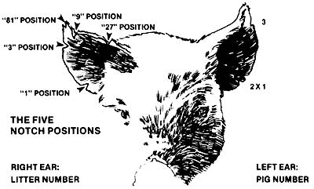

The Homestead Hog
Baby pig management made easy.
By Pat Imig
May/June 1977
BABY PIG MANAGEMENT MADE EASY
The instant a newborn piglet slithers out of a sow's moist, warm reproductive tract . . . is the instant when the battle against baby pig mortality begins. And a difficult battle it is, too, because-as I've said before (MOTHER NO. 43, page 26)-the hard, cold statistics indicate that of all piglets born alive at farrowing, one in four will die prior to reaching the age of six weeks.
What can you and I-as small-scale pork producers-do to reverse these statistics? We can start by making sure that our newborn pigs have a safe, warm (90°-95° F) place to live for their very first hours of life outside the womb.
Authorities say that the infant pig comes equipped with two very highly developed instincts at birth: [1] the ability to seek warmth, and [2] a driving urge to find food. Unfortunately, however, the hapless infant usually puts instinct [2] ahead of instinct [1], so that-many times-instead of gravitating toward the radiant warmth of the 90°-95° hover you've put up to protect him immediately after birth, the just-born young'un will journey across the 70°-75° sow pen in search of a plump teat to suckle. Our job is to keep this from happening . . . at least, until delivery is complete.
Why? Because even the most docile-looking mother sow can (and will) do unexpected things during delivery. For instance, quite often a farrowing sow will draw her legs tightly against her body and then thrust them out straight to expel a pig. If a wobbly-legged infant happens to be in the way when mama extends her legs, the little one can be sent tumbling across the pen floor, badly cut and bruised. Needless to say, our newborn pigs have enough strikes against them when they come into the world without this sort of thing occurring!
To protect your piglets from physical trauma (and thermal shock), then, it's advisable that you grab each infant as it arrives and [1] give the young'un a thorough-but gentle-rubdown with a soft towel (to prevent chilling), [2] apply tamed iodine (which you can buy at any veterinary supply store) to the babe's navel, and [3] tuck the tiny three-pound pig into a nice, warm hover until the sow has finished farrowing. Once delivery is complete-and all the piglets have been dried off and warmed- then you can allow the little ones to satisfy their craving for food.
You'll want to supervise the first nursing to be certain that every piglet gets its proper share of colostrum. Just how important is this "first milk" to the babies? I think I can safely state that without this life-giving fluid, a piglet's chances of survival would be-to say the least-bad. But to dispel a long-standing myth, colostrum is not the infants' only source of disease-fighting antibodies: A sow will actually continue to furnish her young with immunoglobulins in her milk for approximately three weeks, after which-as the mother's supply of milk begins to wane-Nature triggers the piglets' own immunity systems into action. (Thus, newborn pigs are never without protection, so long as they get some milk each day.)
By the time a piglet is 48 hours old, its hindquarters will have begun to lose their characteristic-at-birth gaunt appearance and the animal's movements will (for the first time) seem coordinated. At this point, the infant has recovered sufficiently from the shock of birth to undergo "phase one" of our baby pig care program: namely, the administration of an iron injection.
Whether we homesteaders like it or not, all pigs are born anemic. And this anemia-unless checked-can result in stunted growth, or even death . . . which is why it's imperative that you learn to handle a syringe and give your little ones the booster they need. A 2-cc injection of a commercial iron preparation into the front shoulder or buttock at two days of age-and a follow-up oral administration at 14 days-will raise a piglet's iron level enough to eliminate any threat of anemia-related growth dysfunction.
Phase two of our baby pig care program calls for the trimming of the piglets' needle teeth. Young suckling pigs are by nature aggressive eaters, and in their eagerness to fill their empty bellies with rich, warm milk they can (and almost certainly will) injure the sow's udder . . . unless their needle (or "eye") teeth are cut at the very tip with a sharp, clean pair of wire cutters or nail clippers. (As long as you're careful not to crush the teeth or go too deep and draw blood, there's little or no chance of infection developing.)
Phase three in some folks' pig care plan is tail docking . . . but frankly, I'm not very enthusiastic about this procedure. While it's certainly possible that cannibalism could occur when pigs are held in total confinement for their entire lives-or when they've been fed an improper diet-I still maintain that in a homestead hog-raising operation where the watchword is careful management, one's chances of seeing an outbreak of tail-biting are-at best-marginal. Also, people who dock the tails of their young pigs lose one of the best disease-detection systems at the homesteader's disposal: the limp tail. If you feel you MUST dock, however, now (while the pigs are only two days old) is the time to do the job. Just clip the tail off one half inch from the body and treat the wound with tamed iodine.
The fourth (and final) phase of our 48-hour pig care program involves ear-notching . . . a practice I wholeheartedly support. As small producers working on a limited amount of capital, you and I simply cannot afford to hold onto inferior sows. Rather, we need to be able to identify females that consistently give rise to small, underweight offspring (or to pigs that are slow to develop), so they can be separated from the rest of the herd and sold off (or butchered). And the best way I know to keep track of such animals is to buy an ear-notching tool (check with your feed store) and use it to mark the ears of all the pigs in a litter. (See the accompanying illustration for an explanation of the "universal ear-notching system".)
By the time your animals are five to seven days old, they should have a baby pig waterer in their hover and the infants should be given a constant supply of clean, fresh water. At eight to ten days, the little ones are ready to receive their first creep-fed starter rations . . . and at 14 days-after the pigs have received their second, oral administration of iron-it's time to castrate the young boar pigs.
The castration procedure we use (and recommend) goes as follows: First-to ensure the proper amount of drainage-make an inch-long incision in the lower half of the scrotum. Next, squeeze the testicles through the cut and make a second incision-1/2" to 3/4" in length-in the thin, transparent membrane covering the testes . . . then [1] apply a slight amount of pressure to force the testicles through the opening, and [2] gently pull them loose from the pig's body. (If you've waited until the young'un has passed the 40-pound stage, the testes won't pull away quite so easily and you'll have to sever the spermatic ducts with a knife.) Afterwards, apply a generous amount of tamed iodine to the wound and be on the alert for signs of infection.
Once your porkers have reached the ten-pound plateau, it's time to switch them over to a 20%-protein ration and
leave 'em on this feed until the animals are well past their first marketable weight of 40 pounds . . . which is also to say well past the weaning point.
When-exactly-should piglets be weaned:' There's no hard and fast rule, but we like to wean our porkers 42 days afterbirth, since this is when the mother reaches a natural low point in her milk flow. (Forced lactation past 42 days tends-we think-to weaken the mother's health.)
By the time your animals are old enough to wean, they will have passed a major milestone in their development. From this point until the shoats reach market weight, your pig care program will involve little more than keeping the porkers clean, well fed, and comfortable (i.e., at an ambient temperature of 70°-75° F). When your pigs finally do go off to market, you should be able to count 'em and find-thanks to careful management-that four (and not just three) out of every four pigs born alive survived.
THE "UNIVERSAL EAR-NOTCHING SYSTEM"
The "universal ear-notching system" is a means of identifying pigs both individually and according to the sow from which they came. Here's how it works: The notches in a pig's right ear are the same as the notches in the mother's right ear. (Thus, all the animals in a given litter will exhibit the same notch pattern in their right ears.) The left ear's notchings indicate the pig's number within a litter. (.No two pigs in a single litter will have the same serration pattern in the left ear.)
OK. Notice that there are five locations on the ear where notches can be made. These areas are called the "one", "three", "nine", "twenty-seven", and "eighty-one" positions (see drawing/. By nicking an animal's ear one or more times in one or more of these five positions, it's possible to give a piglet any number from one to eighty-one (or one to a hundred and sixty-two, if need be/. In the illustration above, the pig's left ear has two notches in the "one" position and one notch in the "three" position, indicating that the animal is number five in its litter. /Pig number six would have two notches in the "three" position, pig number seven would be the same but with an additional notch in the "one" position, and so on.)
 |
 |
|